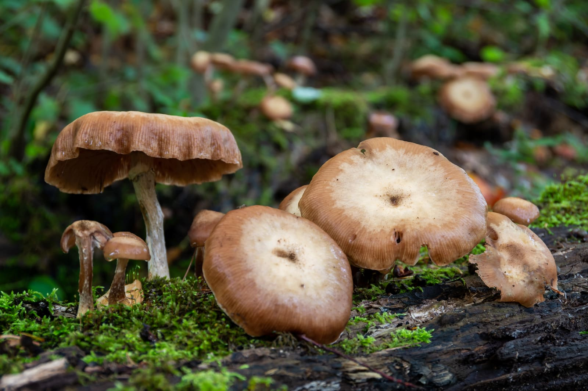
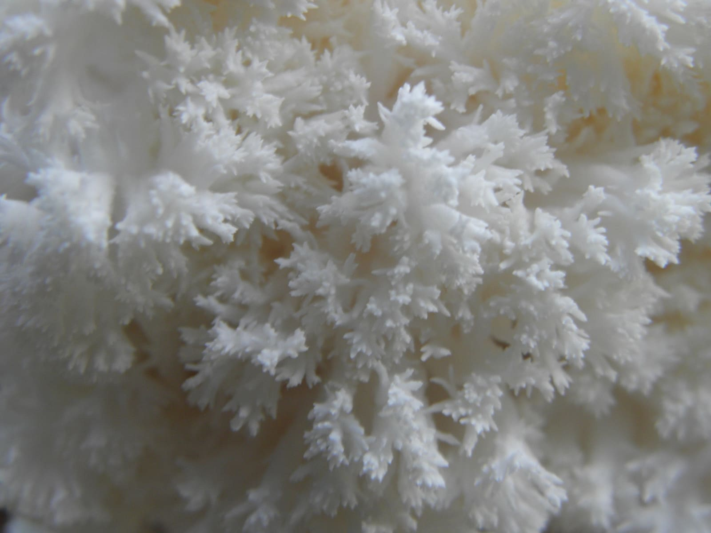
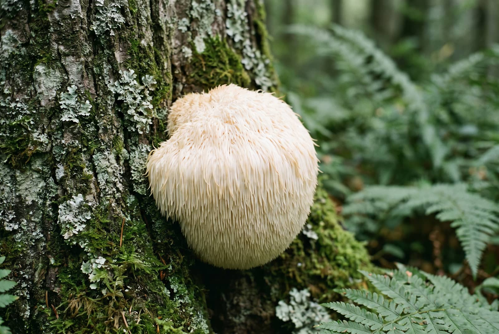
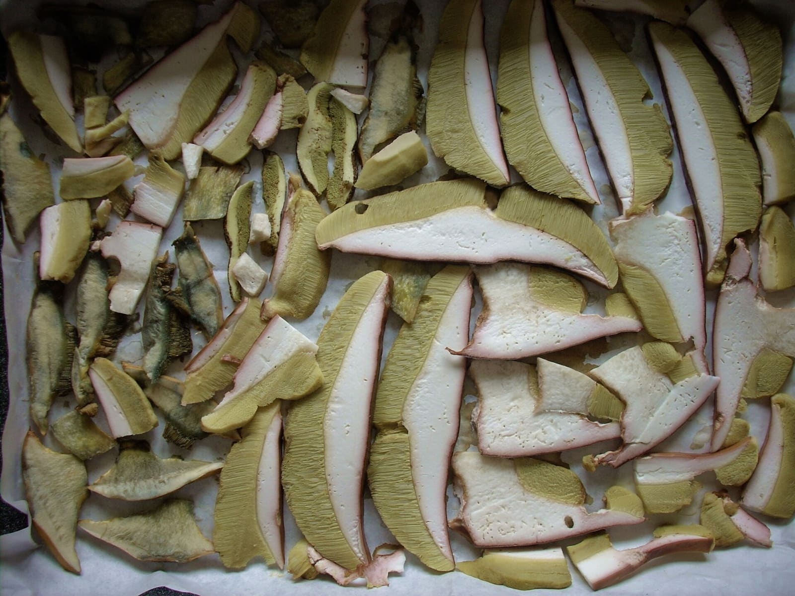
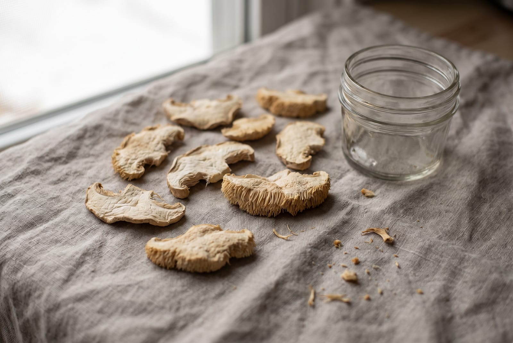

Mushrooms · Ingredient notes
Whole fruiting body, no rice flour.
A lion's mane has two parts, and only one of them is the mushroom you picture. Most of the powder sold in this country is the other part, grown through a block of grain and milled with the grain still in it. Here is how to tell which one you have bought, from the label alone.
By Reiss Davies Ausar8 September 20269 minute read

Somebody brought a tub of lion's mane powder into the shop in the spring and asked me why it tasted of biscuits. It was a fair question. I read the back of it with him. The ingredient line said organic lion's mane mycelial biomass, and that phrase, which sounds like a compliment, is the reason it tasted of biscuits. He had bought a grain block with fungus grown through it, and no way to know how much was which.
Nobody had lied to him. Every word on that tub was accurate. It is just that the words were doing a job, and unless you already know what mycelial biomass means you would read it as a fancy way of saying mushroom. It is not.
01What lion's mane is
Hericium erinaceus is a fungus of old hardwood, usually beech and oak. It grows out of a wound in the trunk as a single white mass with hundreds of soft spines hanging off it, and that is all there is to it. No cap, no stem you would notice, no gills. The spores form on the outside of the spines instead. If you have only ever seen it as powder, the thing itself looks like something left in the shower.

The English names all describe the same shape: lion's mane, bearded tooth, and in America pom pom. In Japanese it is yamabushitake, after the yamabushi, the ascetics who lived in the mountains. That is where the mountain priest wording on the old listing came from.
In Britain it is genuinely rare, mostly in the beech woods of the south, and it is one of the few fungi with legal protection here. It is listed on Schedule 8 of the Wildlife and Countryside Act 1981, which means picking it in the wild is an offence here. If you find one, photograph it and leave it where it is. Where the fungus in my jar was grown or gathered is not printed on the label, so I am not going to tell you.
02Two parts of one fungus
This is the whole of the argument, so it is worth being slow about it.
A fungus is mostly the part you never see. Mycelium is a network of fine white threads that runs through wood or soil, digesting it. It is the organism getting on with its life, and in a tree it can carry on for years.
The fruiting body is what the mycelium eventually pushes out into the air to make spores. On a lion's mane that is the pale spined mass in the photograph at the top of this page, growing straight out of the wood. It is the part that has been eaten and dried and sold in markets for centuries, because it is the part you can find, pick and cook.


Both parts are the same organism, in the way that a root and an apple are the same tree. They are not the same material, they do not contain the same things in the same proportions, and they are not grown the same way. A label that says lion's mane without saying which part is not telling you what is in the jar.

03Where the rice comes from
Growing a fruiting body is slow. You start with a block of sterilised hardwood sawdust, you let the mycelium colonise it over several weeks, then you put it in a humid room and wait for it to fruit, then you pick it and dry it. Months, and a building.

Growing mycelium on grain is quick and it is done in a bag. You sterilise brown rice, oats, rye or sorghum, add the fungus, and in two or three weeks the threads have run through the whole bag. The result is a solid brick of grain laced with white mycelium. That brick is dried and milled whole, and the powder that comes out is called mycelial biomass, or myceliated grain, or sometimes just lion's mane.
Nobody takes the rice back out, because there is no practical way to do it.
I want to be careful here, because this is the point where articles like this usually start inventing numbers. Various figures get quoted for how much of that powder is grain rather than fungus. I am not going to print one, because I have not measured it myself and the honest answer is that it depends entirely on the producer. What I can tell you is the structural fact: the grain is not separated out, because the mycelium has grown through it and there is no practical way to separate them. Whatever proportion it is, it is in the capsule.
04The words on the label, and what they mean
You can settle nearly all of this from the ingredient line, if you know what you are reading. This is the table I would keep in your head in the aisle.
| Fruiting body | The spined mass that grew out of the wood, dried and milled. The mushroom itself. This is what is in my jar. |
|---|---|
| Mycelium | The thread network, not the mushroom. Same organism, different part, different material. |
| Mycelial biomass, myceliated grain, mycelium on rice | Mycelium grown through a block of sterilised grain, then dried and milled with the grain still in it. The grain is part of what you are buying. |
| Full spectrum | No agreed meaning. Sometimes it means both parts of the fungus. Sometimes it means the grain block. Ask before you pay for it. |
| Extract, 8:1 or 10:1 | Eight or ten kilos of dried material reduced to one. The ratio only tells you something if the label also says which part was extracted, and with what. Hot water and alcohol pull out different things. |
| Polysaccharide percentage | Starch is a polysaccharide, and grain is mostly starch, so on a grain-grown powder this figure can be counting the rice. A beta-glucan percentage is the narrower measure. Neither is on my label, because I have not had either measured. |
| Organic | A farming standard, and a certifier's code number should be on the pack if it is claimed. It says nothing about which part of the fungus is in it. |
Two phrases are worth more than the rest of the pack copy put together: fruiting body, and the name of any grain. If the first is there and the second is absent, you know what you have. If neither is there, you also know what you have, in a different sense.

05What I am allowed to say about it
Nothing, is the short answer, and I would rather say that plainly than write around it.
I run a food business in England. The only health claims I am permitted to make are the ones on the Great Britain register, and those attach to a named nutrient, not to a plant or a fungus, and only where I can show my product contains enough of that nutrient to qualify. For Seaking I can do that, because every capsule is measured at 75 µg of iodine. For lion's mane there is no authorised claim on the register at all, and no measured nutrient figure on my label that would qualify me to make one. So there is no sentence for me to say, and you will not find one on the product page.
The old listing for this jar said a great deal more than that, and it should not have. I have taken all of it off. What you will read about lion's mane elsewhere is somebody's own experience, which they are entitled to describe and I am not, or a claim that has not been proved to the standard the law asks for, or a claim that is simply not legal to make in this country. I would rather publish the specification and let you decide.
06What is on my label, and what is missing from it
Mine is one ingredient: Hericium erinaceus fruiting body, dried, milled, in a vegan capsule. No brown rice flour, no oats, no maltodextrin, no bulking agent, no flow agent. Two capsules in the morning with at least 500 ml of water. £24.99, one size.

Now the part most shops leave out. Three things are not printed on my current label, and until they are they are not on the product page either.
- The count and the milligrams. The number of capsules in the jar and the weight in each are not printed, so I cannot give you a cost per day for this one. For comparison, Mycrodose and Reishi are 50 at 800 mg, and Chaga is 750 mg a capsule. I am not going to assume this one matches them, because assuming is how wrong numbers get printed.
- Where it was grown or gathered. Not printed, so I am not naming a country I cannot evidence.
- Any measured figure for what is in it. No beta-glucan percentage, no extraction ratio, nothing of that kind, because I have not had the batch tested for it.
That is three blanks on a specification sheet, on my own product, on a page whose job is to sell it. I would rather you saw the blanks. The sheet lists them as blanks and they come off the page the day the label prints them.

07How I take it, and who should not
Two capsules in the morning, with at least 500 ml of water. That is the serving and there is no second serving later in the day. If you miss a morning, take two the next morning rather than four, since there is nothing to be gained by doubling up.

Capsules keep on a dry shelf out of the sun, with the lid on. There is no fridge involved, which is the practical difference between this and a gel. If you want the ritual of a spoon in the morning, that is the gel. If you want something that lives in a drawer and travels, it is this.
Who should leave it alone:
- Anyone who reacts to mushrooms. This is a mushroom, dried and milled. If mushrooms are an allergen for you, this is one too.
- Pregnant or nursing. Ask your GP or midwife before you start. There is not enough published safety work on it for me to say anything else.
- Anyone on prescribed medication. Ask your pharmacist. They will answer in a minute and they will not mind being asked.
- Children. Not for them. Keep it out of their reach.
None of that is medical advice. It is the list of questions I ask across the counter before I sell anyone a jar, and I would ask you the same ones. I wrote a similar list for the gel in the sea moss article, and the reasoning behind both is the same.
08Which jar
There are four mushroom products on my shelf, and the first of them is the one this article is about. This is how I would choose between them.

Lion's Mane
£24.99The jar in this article. Hericium erinaceus fruiting body, one ingredient, no grain. Two capsules in the morning.
See the specification
Mycrodose
£39.99Four mushrooms in one capsule. Lion's mane, Cordyceps militaris, chaga and reishi. 50 vegan capsules at 800 mg.
Add to bag
Reishi
£24.99One mushroom, on its own. Ganoderma lucidum, 50 vegan capsules at 800 mg.
Add to bag
Chaga
£24.99The birch fungus. Inonotus obliquus, 750 mg in each capsule, vegan.
Add to bagIf you are still not sure, come into the shop on Smithdown Road, Tuesday to Sunday, between 10 and 6. Bring the tub you bought online. Reading the back of it together takes a minute, and you will not need me the next time.

Reiss Davies Ausar
Founder and formulator at Herbase. Trading online since 2019 and behind the counter at 599 Smithdown Road, Liverpool, since August 2024. Author of three books on herbal practice. Book an hour with him if you want to go into more detail.